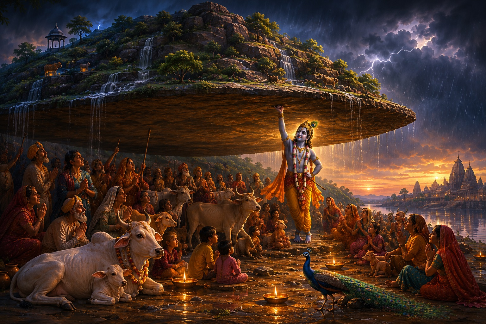

Timeline & Dating
When Krishna Lived
The Mahabharata war is dated by multiple sources — astronomical references within the text, the start of the Kali Yuga in the Puranic tradition, and increasingly by archaeoastronomical analysis — to approximately 3100 BCE. Krishna's life precedes that war, placing his birth and the Vrindavan years somewhere around 3200–3100 BCE. That is roughly 5,000 years ago. Rama, by the same methodology applied to the Ramayana's astronomical references, is dated to approximately 7000–8000 BCE — around 8,000 to 9,000 years before the present.
These figures are treated in the Hindu tradition as historical record, not mythology. The distinction matters. Mythology implies fiction. History implies events that happened, in real places, to real people, with consequences that persist. Mathura is a real city. The Yamuna is a real river. Govardhan Hill exists and pilgrims still walk its 14-mile circumference today. When a tradition's sacred events are grounded in identifiable geography, dismissing them as myth requires more justification than dismissing events grounded in no geography at all.
The three phases of Krishna's life map cleanly onto three cities. Mathura is where he was born — into a prison cell, to parents in chains, under a tyrant who wanted him dead. Vrindavan is where he grew up — in a forest, among cowherds, free. Kurukshetra is where he delivered the Bhagavad Gita — on a battlefield, before the greatest war of the age. Prison. Forest. Battlefield. These are not random settings. They are a theological arc.
The Prison
Mathura: Born Into Constraint
Kamsa was the ruler of Mathura. He was Devaki's cousin — the son of Ugrasena, the king he had deposed. A prophecy told him that the eighth child of his cousin Devaki would be the cause of his death. His response was to imprison Devaki and her husband Vasudeva on their wedding day and kill each child as it was born. Seven children were killed before the eighth. Tyranny is always born of fear, not strength. Kamsa's cruelty was not power — it was panic.
Krishna was born at midnight, in a prison cell, in chains. The moment of birth: the chains fell from Vasudeva's wrists. The prison doors opened on their own. The guards fell into a deep sleep. The divine enters the world at its most constrained — and constraint cannot hold it. This is the first teaching of the Mathura phase, encoded in the setting itself.
Vasudeva carried the newborn Krishna across the flooded Yamuna in the middle of the night. The river was in monsoon flood — dark, fast, dangerous. As Vasudeva waded in with the child held above his head, the Bhagavata Purana records that the waters parted to let him through. The river responds to faith, not force. Vasudeva did not command the Yamuna. He simply walked in. The path opened.
Vasudeva carries infant Krishna across the Yamuna — the river parts for faith, not force
त्वमेव माता च पिता त्वमेव
त्वमेव बन्धुश्च सखा त्वमेव ।
त्वमेव विद्या द्रविणं त्वमेव
त्वमेव सर्वं मम देवदेव ॥
Tvameva mātā ca pitā tvameva / tvameva bandhuśca sakhā tvameva / tvameva vidyā draviṇaṃ tvameva / tvameva sarvaṃ mama deva-deva
You alone are mother, and father, you alone — kinsman and companion, you alone. Knowledge and wealth, you alone — you are everything to me, O God of gods. (Offered by Devaki and Vasudeva at Krishna's birth — Bhagavata Purana 10.3)
Two Sets of Parents
Devaki and Yashoda: Two Kinds of Love
Krishna had two mothers and two fathers. Devaki and Vasudeva were his birth parents — they gave him life and then gave him away to protect him. Yashoda and Nanda were his adoptive parents in Vrindavan — they raised him, fed him, scolded him, tied him to a wooden mortar when he misbehaved.
Devaki and Vasudeva represent sacrifice. They watched their first seven children be killed. They carried the eighth across a flooded river in the middle of the night and handed him to strangers. The love that gives up what it loves most, to protect what it loves most, is its own theological category.
Yashoda and Nanda represent unconditional love — the love that does not know who it is loving. Yashoda did not know her foster son was divine. She loved him as a child who stole butter, who skipped chores, who charmed everyone around him. When she once looked into his mouth and saw the entire universe inside it, she forgot immediately — divine grace protected her from the knowledge that would have separated her from him. You cannot bind what has no boundary. The divine submits to love, not to force. The rope she used to tie him was always two fingers too short. Every rope she added was still two fingers too short. Until she gave up trying to bind him and simply held him — and then it was long enough.
Both kinds of love are necessary. The tradition needed both parents to show both things. Neither story is complete without the other.
Vrindavan
The Forest Years: Innocence as Preparation
Vrindavan means "the forest of tulsi." It is six miles from Mathura — close enough that the connection is deliberate, far enough that it is a different world. In Mathura: palace, prison, politics, violence. In Vrindavan: forest, river, cows, music, childhood.
The Vrindavan years are dense with incidents, each carrying a teaching. Kaliya was a many-headed serpent whose venom had made the Yamuna toxic around a particular bend — nothing could live in that stretch of water, birds fell dead flying over it, cows died drinking from it. Krishna dove into the poisoned river alone and subdued Kaliya, dancing on his hoods until the serpent submitted. Then he let Kaliya go — exiled him, not killed him. The divine transforms, it does not simply destroy. The goal was a clean river, not a dead serpent.
The Govardhan episode is the one that carries the most direct civilizational argument. Indra — king of the gods, lord of rain — was the traditional object of annual worship in Vraja. Krishna told the villagers to stop. Worship Govardhan Hill instead, he said — worship the land that feeds your cows, the grass they eat, the mountain that shelters you. Indra, enraged, sent seven days of catastrophic rain. Krishna lifted Govardhan Hill on his little finger and sheltered the entire village, all the animals, all the people underneath it. Indra eventually submitted. The sacred lives in your immediate landscape, not in distant ritual appeasement of a distant power.

Krishna lifts Govardhan Hill — the sacred lives in your immediate landscape
गोपालोऽहं गवां भर्ता
भव्यानाम् अभिरक्षिता ।
गोवर्धनं समारोप्य
सर्वान् रक्षामि वो वृजे ॥
Gopālo'haṃ gavāṃ bhartā / bhavyānām abhirakṣitā / Govardhanaṃ samāropya / sarvān rakṣāmi vo Vraje
I am the cowherd, sustainer of cows, protector of all that is good. Raising up Govardhan, I protect everyone in Vraja. (Bhagavata Purana 10.24 — Krishna's declaration before lifting the hill)
The Arc
Return, Kurukshetra, and the Full Map
Krishna left Vrindavan and never returned to live there. He went back to Mathura, killed Kamsa, freed his parents, restored his grandfather Ugrasena to the throne. Then he moved the Yadava kingdom to Dwarka on the western coast. Then, decades later, came Kurukshetra — the eighteen-day war, and the moment in which, on the first morning before the fighting began, he delivered the Bhagavad Gita to Arjuna.
The Vrindavan years — the butter stealing, the gopis, the flute, the dances in the forest — were not the destination. They were preparation. The innocence of Vrindavan built the foundation for the moral complexity of Kurukshetra. A god who had only known the forest could not have stood on that battlefield. A god who had only known the battlefield could not have produced the music of Vrindavan. Both were necessary for what the tradition needed him to be.
The full arc: Constraint → Innocence → Moral Complexity. Prison → Forest → Battlefield. Mathura → Vrindavan → Kurukshetra. This is the theological map. When you visit Mathura and Vrindavan today, you are standing on the first two thirds of that map. The land holds the memory of what was learned here — and what was being prepared.
A god who had only known the forest could not have stood on that battlefield. A god who had only known the battlefield could not have produced the music of Vrindavan.
That is why these cities matter — not as tourist destinations, not as heritage sites, not as identity markers, but as places where something happened that the tradition has been transmitting for 5,000 years. The ghats, the forest, the hill — they were the original classroom. They still are.